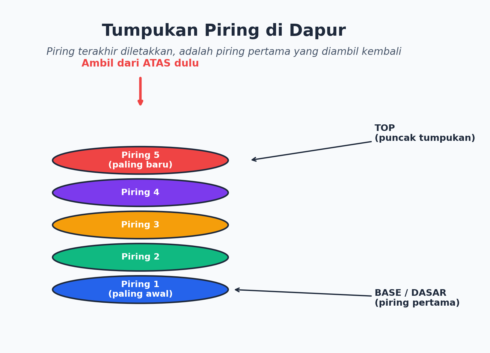
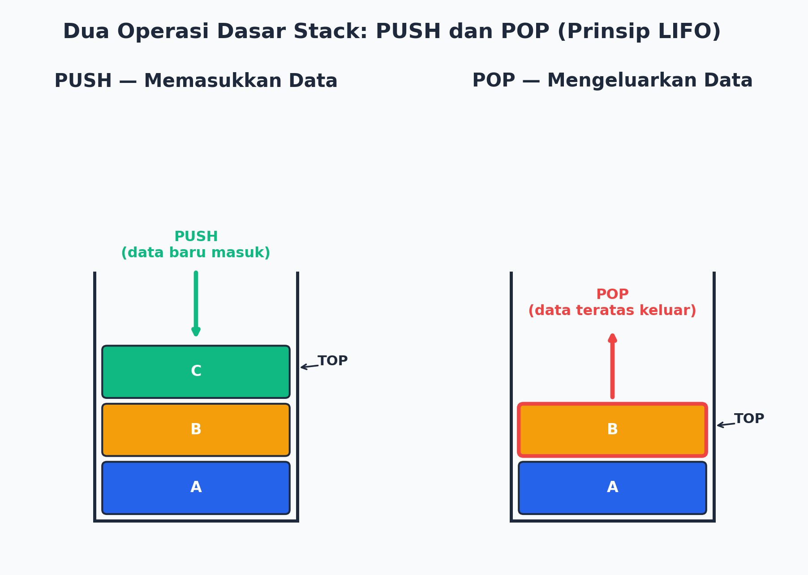
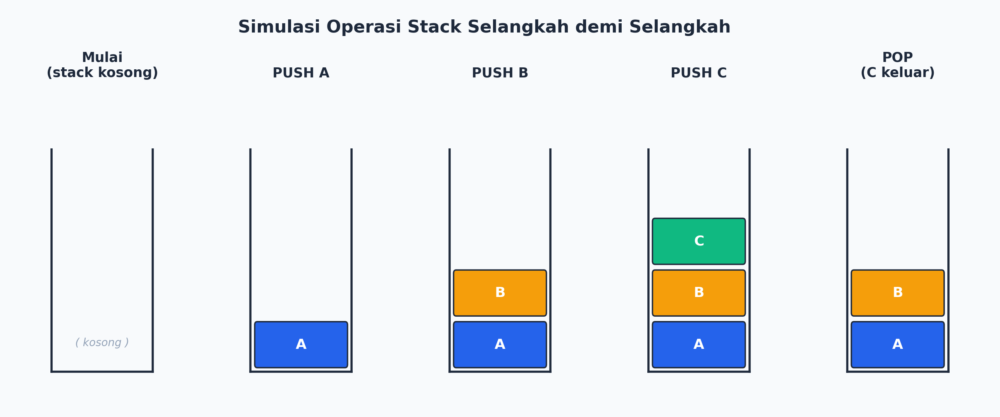
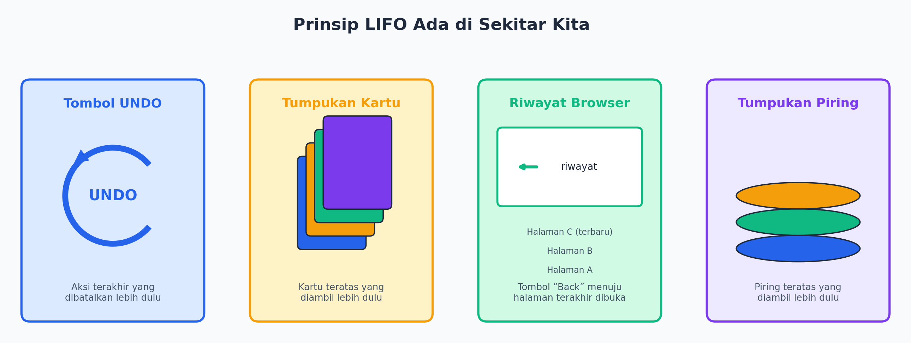
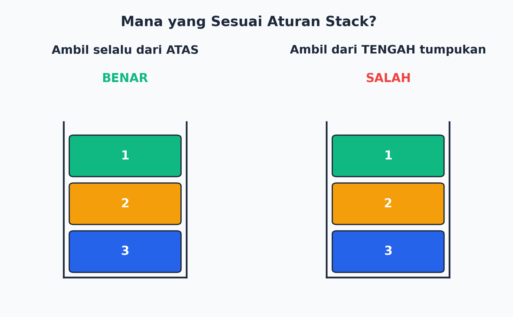
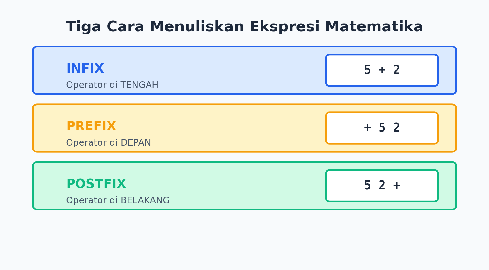
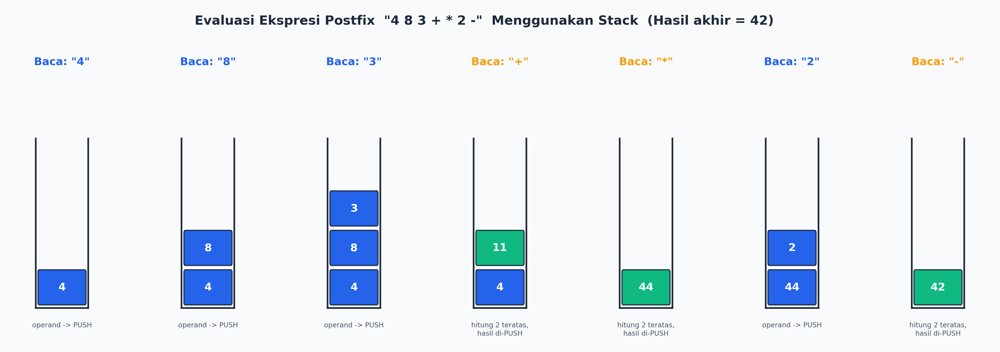

01Coba Bayangin Dulu...
Sebelum masuk istilah teknis, yuk amati kejadian sehari-hari ini.
Kalian lagi nyuci 5 piring, terus ditumpuk satu-satu: piring 1 paling bawah, sampai piring 5 paling atas. Nah, pas mau dipakai lagi, piring mana yang paling gampang diambil?

💡 Jadi, Apa Itu Stack?
Stack (tumpukan) adalah cara menyimpan data yang disusun bertumpuk, dan hanya bisa diakses dari satu sisi saja, yaitu bagian paling atas (top).
Aturan mainnya cuma satu: LIFO — Last In First Out. Yang terakhir masuk, dia yang pertama keluar.
Gampangnya gini: bayangin stack itu kayak tabung yang cuma punya satu lubang di atas. Kalian cuma bisa masukin atau ambil barang dari lubang itu doang. Nggak bisa colek-colek dari tengah atau bawah, ya!
02Dua Gerakan Wajib: PUSH dan POP
Di dunia stack, cuma ada dua "jurus" utama.
⬆️ PUSH
Masukin data baru ke posisi paling atas tumpukan.
⬇️ POP
Ambil/keluarin data dari posisi paling atas tumpukan.

Coba deh ikutin simulasi berikut ini pelan-pelan:

03Stack Ternyata Ada di Mana-mana!
Prinsip LIFO banyak dipakai di kehidupan kita sehari-hari, bahkan di aplikasi yang kalian pakai tiap hari.

- Tombol Undo (Ctrl+Z) selalu membatalkan aksi yang paling BARU dilakukan.
- Riwayat browser (tombol Back) membawa kalian ke halaman yang paling TERAKHIR dibuka.
- Tumpukan kartu dalam permainan — kartu paling atas yang diambil duluan.
04Cek Pemahaman Yuk ✅❌
Mana dari dua gambar berikut yang sesuai aturan stack?

Jika stack berisi [A, B, C] dengan C di paling atas, lalu dilakukan POP satu kali, apa isi stack sekarang?
05Stack Buat Hitung-hitungan? Bisa Banget!
Biasanya kita nulis hitungan matematika dengan operator di TENGAH, contohnya 5 + 2 (disebut INFIX). Tapi komputer punya cara lain.

Kenapa Komputer Suka Postfix?
- Tidak perlu tanda kurung sama sekali
- Bisa dihitung langkah-demi-langkah pakai STACK
- Urutan operasi jadi jelas dan pasti
06Trik Menghitung Postfix Pakai Stack
Yuk kita coba bareng-bareng menghitung ekspresi postfix 4 8 3 + * 2 − (sama aja dengan 4 * (8 + 3) − 2 kalau ditulis cara biasa):

07Sekarang Giliran Kalian!
Hitunglah ekspresi postfix berikut menggunakan cara kerja stack, tunjukkan langkah-langkahnya: 6 2 3 * + 4 −
Hasil akhir = 8
08Rangkuman Biar Makin Nempel 📝
- Stack = struktur data yang disusun bertumpuk, cuma bisa diakses dari sisi ATAS (top).
- Aturannya LIFO: Last In First Out — yang terakhir masuk, duluan keluar.
- PUSH = masukin data ke atas tumpukan. POP = keluarin data dari atas tumpukan.
- Contoh di kehidupan nyata: tumpukan piring, tumpukan kartu, tombol Undo, riwayat browser.
- Stack bisa dipakai untuk menghitung ekspresi postfix langkah demi langkah.
09Yuk, Refleksi Sebentar 🤔
- 🙂Menurut kalian, bagian mana dari materi stack ini yang paling gampang dipahami?
- 🤔Bagian mana yang masih bikin bingung dan pengin ditanyain ke guru?
- 💭Coba sebutin satu contoh lain di kehidupan kalian yang mirip prinsip LIFO!
Semangat belajar, ya! Setelah ini, kalian akan mengerjakan LKPD untuk mempraktikkan langsung konsep stack dengan benda-benda di sekitar kalian. 🚀